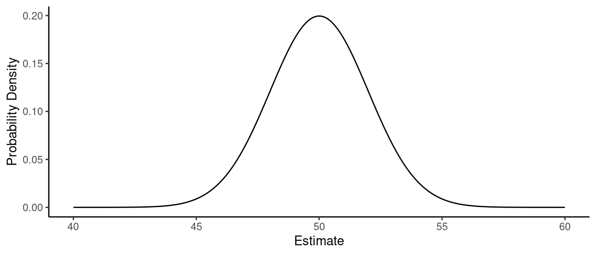
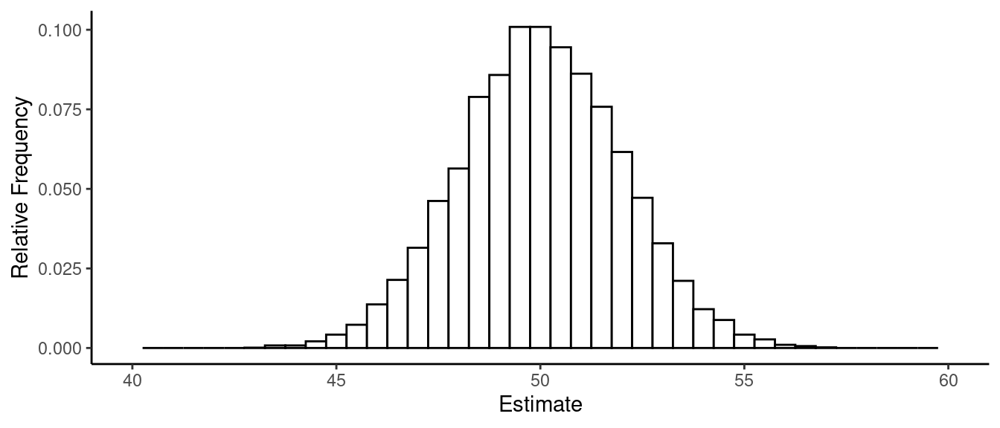

Wednesday, Jan 25
You can also download a PDF copy of this lecture.
Parameter Estimation
There are many ways to estimate the parameters of a regression model. One useful and common approach is to use the method of least squares.
Least Squares Estimation of \(\beta_0, \beta_1, \dots, \beta_k\)
Consider the linear model \[
E(Y_i) = \beta_0 + \beta_1 x_{i1} + \cdots + \beta_k x_{ik}.
\] The least squares estimates of \(\beta_0, \beta_1, \dots, \beta_p\) are
those values that minimize \[
\sum_{i=1}^n (y_i - \mu_i)^2 = (y_1-\mu_1)^2 + (y_2-\mu_2)^2 +
\cdots + (y_n-\mu_n)^2,
\] where \[
\mu_i = \beta_0 + \beta_1 x_{i1} + \beta_2 x_{i2} + \cdots + \beta_k
x_{ik}.
\] These estimates are denoted as \(\hat{\beta}_0, \hat{\beta}_1, \dots,
\hat{\beta}_k\). They are labeled under Estimate
from the output of the summary function.
Estimation of a Linear Function of Parameters
Replacing \(\beta_0, \beta_1, \dots,
\beta_k\) with \(\hat{\beta}_0,
\hat{\beta}_1, \dots, \hat{\beta}_k\) in \[
\ell = a_0\beta_0 + a_1\beta_1 + \cdots + a_k\beta_k + b
\] gives the estimate of the linear function \(\ell\), \[
\hat\ell = a_0\hat\beta_0 + a_1\hat\beta_1 + \cdots + a_k\hat\beta_k +
b.
\] These estimates are labeled as estimate when
using the lincon and contrast functions.
Estimation of the Response Variable Variance
The typical linear model also has one additional parameter, the
variance of \(Y_i\) (denoted as \(\sigma^2\)), which is assumed to be a
constant (i.e., the same regardless of the values of the explanatory
variables). The usual estimator of \(\sigma^2\) is \[
\hat\sigma^2 = \frac{\sum_{i=1}^n (y_i - \hat{y}_i)^2}{n-k-1}.
\] The estimate of \(\sigma\)
(not \(\sigma^2\)) is labeled as the
“residual standard error” from the output of summary, and
the “degrees of freedom”” associated with it is \(n-k-1\) (more generally, this degrees of
freedom is \(n\) minus the number of
\(\beta\) parameters in the model so we
would define it as \(n-p\) where \(p\) is the number of parameters other than
\(\sigma^2\)).
Note: We sometimes make a distinction between an estimator (i.e., the formula/procedure that produces a estimate), and the estimate (i.e., a specific value produced by an estimator).
Sampling Distributions
A sampling distribution is the probability distribution of an estimator.
Example: Consider the model \(E(Y_i) = \beta_0\), and assume that \(\beta_0\) = 50 and also that the standard deviation of \(Y_i\) is \(\sigma\) = 10. The probability distribution below shows the sampling distribution of \(\hat\beta_0\).  The figure below is a histogram of \(\hat\beta_0\) from 1000 samples of \(n\) = 25 observations \(Y_1, Y_2, \dots, Y_{25}\). 
Example: Consider the model \(E(Y_i) = \beta_0 + \beta_1 x_i\) where \(x_1\) = 1, \(x_2\) = 2, \(\dots\), \(x_{10}\) = 10, \(\beta_0\) = 5, \(\beta_1\) = 1, and \(\sigma\) = 1. The figure below shows the distribution of \(\hat\beta_0\) and \(\hat\beta_1\) from 10000 samples of observations of \(Y_1, Y_2, \dots, Y_{10}\).

Three properties of a sampling distribution are of interest.
The mean of a sampling distribution of an estimator (i.e., the expected value of the estimator). Ideally this is equal to the parameter we are estimating (in which case we the estimator is unbiased), or relatively close.
The standard deviation of the sampling distribution of an estimator, which is referred to as the standard error of the estimator.
The shape of the sampling distribution. Typically as \(n\) increases the shape “approaches” that of a normal distribution.
Standard Errors
We can often estimate standard errors of estimators of
parameters or linear functions thereof. These are labeled as
Std. Error in the output of the summary
function, and as se in the output of the
lincon and contrast functions.
Example: Consider the model for the
whiteside data.
library(MASS) # contains the whiteside and anorexia data frames
mgas <- lm(Gas ~ Insul + Temp + Insul:Temp, data = whiteside)
summary(mgas)$coefficients Estimate Std. Error t value Pr(>|t|)
(Intercept) 6.8538 0.13596 50.409 7.997e-46
InsulAfter -2.1300 0.18009 -11.827 2.316e-16
Temp -0.3932 0.02249 -17.487 1.976e-23
InsulAfter:Temp 0.1153 0.03211 3.591 7.307e-04Recall that the model can be written as \[
E(G_i) = \beta_0 + \beta_1 d_i + \beta_2 t_i + \beta_3 d_it_i,
\] where \(d_i\) is an indicator
variable for after insulation so that we can also write the
model as \[
E(G_i) =
\begin{cases}
\beta_0 + \beta_2 t_i, & \text{if the $i$-th observation is
before insulation}, \\
\beta_0 + \beta_1 + (\beta_2 + \beta_3)t_i, & \text{if the
$i$-th observation is after insulation}.
\end{cases}
\] Estimates of the standard errors are reported by
summary. Standard errors are also shown by
lincon and contrast.
library(trtools)
lincon(mgas, a = c(0,0,1,1)) # b2 + b3 estimate se lower upper tvalue df pvalue
(0,0,1,1),0 -0.2779 0.02292 -0.3239 -0.2319 -12.12 52 8.936e-17contrast(mgas,
a = list(Insul = c("Before","After"), Temp = 2),
b = list(Insul = c("Before","After"), Temp = 1),
cnames = c("before","after")) estimate se lower upper tvalue df pvalue
before -0.3932 0.02249 -0.4384 -0.3481 -17.49 52 1.976e-23
after -0.2779 0.02292 -0.3239 -0.2319 -12.12 52 8.936e-17We can also obtain standard errors for estimating the expected weight
change under each treatment condition for the anorexia
study/model.
anorexia$change <- anorexia$Postwt - anorexia$Prewt
mwght <- lm(change ~ Treat, data = anorexia)
contrast(mwght, a = list(Treat = c("Cont","CBT","FT")),
cnames = c("Control","Cognitive","Family")) estimate se lower upper tvalue df pvalue
Control -0.450 1.476 -3.395 2.495 -0.3048 69 0.7614470
Cognitive 3.007 1.398 0.218 5.796 2.1509 69 0.0349920
Family 7.265 1.826 3.622 10.907 3.9787 69 0.0001688Because the shape of a sampling distribution is usually approximately normal, we can say the following.
The mean distance between the parameter and the estimator is approximately \(\text{SE} \times \sqrt{2/\pi} \approx \text{SE} \times 0.8\).
The median distance between the parameter and the estimator is approximately \(\text{SE} \times 0.67\).
The 95th percentile of the distance between the parameter and the estimator is approximately \(\text{SE} \times 1.96 \approx \text{SE} \times 2\).
Note that all of these quantities are proportional to the standard error. Standard errors give us an idea of how (in)accurate a given estimator is for a given parameter in a given model for a given design — the larger the standard error the farther away the estimator will tend to be to the parameter (or function thereof) being estimated.
Also note that in many cases the estimate and the (estimated) standard error are sufficient for computing both confidence intervals and test statistics as shown in the next two sections.
Confidence Intervals
A confidence interval is an interval estimator (as opposed to a point estimator which is a single value) with the property that the estimator has a specified probability of being correct (i.e., the confidence level of the interval). Note that this probability is a property of the estimator, not an estimate.
One common kind of confidence interval (sometimes called a
Wald confidence interval) has the general form \[
\text{estimator} \pm \text{multiplier} \times \text{standard error}.
\] For example, \[
\hat\beta_j \pm t \times \mbox{SE}(\hat\beta_j)
\] where \(\mbox{SE}(\hat\beta_j)\) is the (estimated)
standard error of \(\hat\beta_j\), and
\(t\) is a “multiplier” to set the
desired confidence level. Similarly a confidence interval for \(\ell\) is \[
\hat\ell \pm t \times \mbox{SE}(\hat\ell).
\] In R confidence intervals for model parameters can usually be
computed by applying the confint function to the model
object.
confint(mgas) # 95% confidence level is the default 2.5 % 97.5 %
(Intercept) 6.58100 7.1267
InsulAfter -2.49136 -1.7686
Temp -0.43836 -0.3481
InsulAfter:Temp 0.05087 0.1797confint(mgas, level = 0.99) # 99% confidence level 0.5 % 99.5 %
(Intercept) 6.49030 7.2174
InsulAfter -2.61150 -1.6485
Temp -0.45336 -0.3331
InsulAfter:Temp 0.02944 0.2012For some compact output I often use cbind to append the
confidence intervals to the output from summary as
follows.
cbind(summary(mgas)$coefficients, confint(mgas)) Estimate Std. Error t value Pr(>|t|) 2.5 % 97.5 %
(Intercept) 6.8538 0.13596 50.409 7.997e-46 6.58100 7.1267
InsulAfter -2.1300 0.18009 -11.827 2.316e-16 -2.49136 -1.7686
Temp -0.3932 0.02249 -17.487 1.976e-23 -0.43836 -0.3481
InsulAfter:Temp 0.1153 0.03211 3.591 7.307e-04 0.05087 0.1797Note that other functions like lincon and
contrast provide confidence intervals by default.
lincon(mgas, a = c(0,0,1,1)) # b2 + b3 estimate se lower upper tvalue df pvalue
(0,0,1,1),0 -0.2779 0.02292 -0.3239 -0.2319 -12.12 52 8.936e-17contrast(mgas,
a = list(Insul = c("Before","After"), Temp = 2),
b = list(Insul = c("Before","After"), Temp = 1),
cnames = c("before","after")) estimate se lower upper tvalue df pvalue
before -0.3932 0.02249 -0.4384 -0.3481 -17.49 52 1.976e-23
after -0.2779 0.02292 -0.3239 -0.2319 -12.12 52 8.936e-17They also have a default confidence level of 95%, and will accept a
level argument to specify other confidence levels.
Significance Tests
We consider four components to a given significance test: hypotheses, test statistics, \(p\)-values, and a decision rule.
Hypotheses
A significance test for a single parameter concerns a pair of
hypotheses such as \[
H_0\!: \beta_j = c \ \ \text{and} \ \ H_a\!: \beta_j \neq c,
\] or \[
H_0\!: \beta_j = c \ \ \text{and} \ \ H_a\!: \beta_j > c,
\] or \[
H_0\!: \beta_j = c \ \ \text{and} \ \ H_a\!: \beta_j < c,
\] where \(c\) is some specified
value (often but not necessarily zero). Similarly we can have hypotheses
concerning \(\ell\) by replacing \(\beta_j\) with \(\ell\) in the above statement such as \[
H_0\!: \ell = c \ \ \text{and} \ \ H_a\!: \ell \neq c.
\] Tests that are reported by default by functions like
summary, lincon, and contrast are
for the two-sided null hypothesis with \(c =
0\) so that the hypotheses are \(H_0\!:\beta_j = 0\) versus \(H_a\!:\beta_j \neq 0\) (as when using
summary) or \(H_0\!: \ell =
0\) versus \(H_a\!: \ell \neq
0\) (as when using lincon or
contrast).
Test Statistics
Assuming \(H_0\) is true,
the test statistics \[
t = \frac{\hat\beta_j - \beta_j}{\text{SE}(\hat\beta_j)}
\] and \[
t = \frac{\hat\ell - \ell}{\text{SE}(\hat\ell)}
\] have an approximate \(t\)
distribution with \(n - p\) degrees of
freedom (usually denoted as df in output, where \(p\) is the number of \(\beta_j\) parameters). Note that \(\beta_j\) and \(\ell\) are the values of these quantities
hypothesized by the null hypothesis.
P-Values
The \(p\)-value is the probability of a value of the test statistic as or more extreme than the observed value, assuming \(H_0\) is true. What is as or more extreme is decided by \(H_a\): \[ H_0\!: \beta_j = c \ \ \text{and} \ \ H_a\!: \beta_j \neq c \Rightarrow \text{$p$-value} = P(|t| \ge t_{\text{obs}}|H_0), \] or \[ H_0\!: \beta_j = c \ \ \text{and} \ \ H_a\!: \beta_j > c \Rightarrow \text{$p$-value} = P(t \ge t_{\text{obs}}|H_0), \] or \[ H_0\!: \beta_j = c \ \ \text{and} \ \ H_a\!: \beta_j < c \Rightarrow \text{$p$-value} = P(t \le t_{\text{obs}}|H_0), \] where \(t_{\text{obs}}\) is the observed/computed value of the \(t\) test statistic.
Note: Software typically produces the following: (a) a test with a
null hypothesis where \(\beta_j = 0\)
of \(\ell = 0\), and (b) p-values only
for two-sided/tailed tests. This is true of
summary, lincon, and contrast.
But the p-value for a one-sided/tailed test can be obtained as
half of the p-value for the two-sided/tailed test (assuming that \(t_{\text{obs}}\)) is in the direction
hypothesized by \(H_a\).
A composite null hypothesis such as \[ H_0\!: \beta_j \le c \ \ \text{and} \ \ H_a\!: \beta_j > c, \] or \[ H_0\!: \ell \le c \ \ \text{and} \ \ H_a\!: \ell > c, \] can be done by assuming the equality under the null (e.g., \(\beta_j = c\) or \(\ell = c\)), and interpreting the computed p-value as the upper bound on the p-value.
Decision Rule
The decision rule for a significance test is always \[ \text{$p$-value} \le \alpha \Rightarrow \text{reject $H_0$}, \ \ \text{$p$-value} > \alpha \Rightarrow \text{do not reject $H_0$}, \] for some specified significance level \(0 < \alpha < 1\) (frequently \(\alpha\) = 0.05).